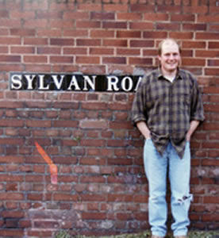
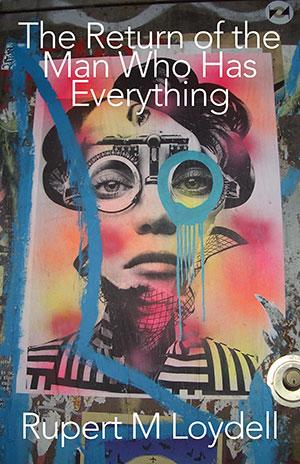

Jester-Knight
Literature
Film
Music
Visual Art
Tributes
Submissions
Links
Contact
Rupert Loydell

Biography
Rupert Loydell is Senior Lecturer in English with Creative Writing at Falmouth University, the editor of Stride and With magazines, and a contributing editor to international times. He is the author of many collections of poetry, including The Return of the Man Who Has Everything, Wildlife and Ballads of the Alone, all published by Shearsman Books. An artist’s book-in-a-box, The Tower of Babel, was published by Like This Press; and Encouraging Signs, a book of essays, articles and interviews by Shearsman. He edited Smartarse and co-edited Yesterday’s Music Today for Knives Forks & Spoons Press, From Hepworth’s Garden Out: poems about painters and St. Ives for Shearsman, and Troubles Swapped for Something Fresh, an anthology of manifestos and unmanifestos, for Salt. He lives in a creekside village with his family and far too many CDs and books.
He may be contacted at RML@stridebooks.co.uk or rupert.loydell@falmouth.ac.uk

Click below for Rupert's work
Poems (.pdf) NEW!!!